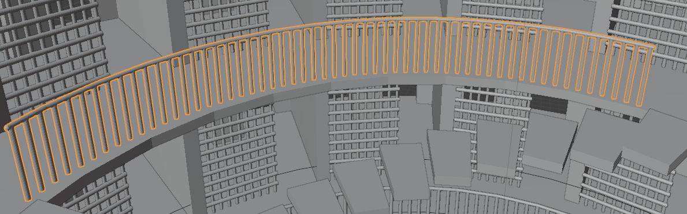
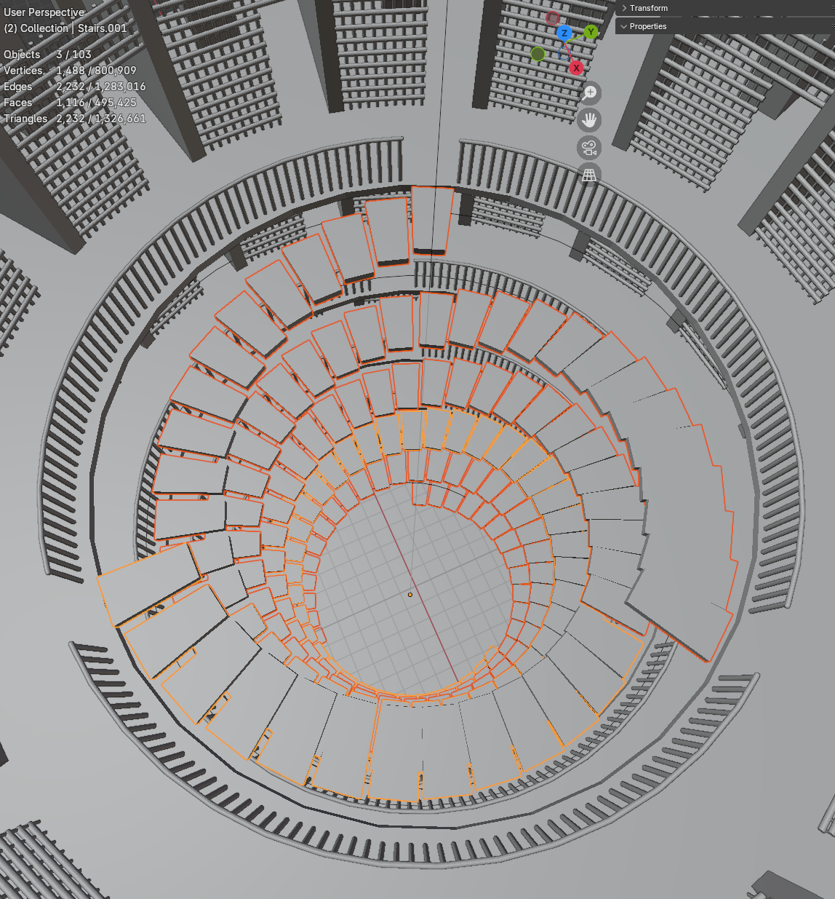

Panopticon Hell

I modeled my own interpretation of Jeremy Bentham's Panopticon through the lens of self-doubt, creating a self-debilitating prison. I first learned about the panopticon in a political science class when discussin ascetism and how it contributes to America's contemporary politics. The idea of creating a structure that prompts the individual contained in the prison to self-censor themselves for fear of constant surveillance is an intriguing notion to me. Thus, I decided to connect this structure itself to self-doubt and how that in of itself can be a self-made prison.
The Process:


This model was made in Blender with the constant use of arrays to make every floor, stair, and cell.